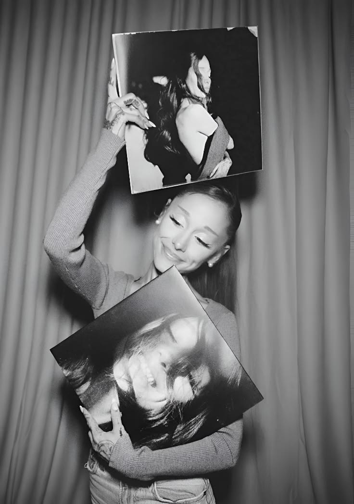

Ariana
Grande
Singer • Actress
Ariana Grande is een Amerikaanse zangeres en actrice. Ze werd bekend door haar rol in Victorious van Nickelodeon. Daarna werd ze wereldberoemd met haar eigen liedjes en haar bijzondere stem.
01
Wie is Ariana?
Ariana Grande is een Amerikaanse zangeres en actrice. Ze werd bekend door haar rol in de serie Victorious en is daarna uitgegroeid tot een wereldberoemde popster. Ze heeft veel bekende nummers, zoals Thank U, Next, 7 rings en positions. Daarnaast speelde ze in de film Wicked de rol van Glinda.
02
Muziek
Haar muziek bestaat vooral uit pop en R&B. Ze heeft verschillende succesvolle albums uitgebracht.
Bekende nummers
Leuke weetjes
- Haar volledige naam is Ariana Grande-Butera.
- Ariana heeft ook haar eigen beautymerk, r.e.m. beauty.
- Ze heeft een grote liefde voor honden en heeft er zeven.
- Haar paardenstaart is een belangrijk onderdeel van haar uitstraling geworden.
Waarom ik haar leuk vind
Ik vind Ariana Grande leuk omdat ik al sinds mijn 10e fan van haar ben. Ik luister al heel lang naar haar muziek en vind haar stem erg mooi. Haar muziek is voor mij herkenbaar en ik krijg er vaak een goed gevoel van. Daarom is Ariana één van mijn favoriete artiesten.